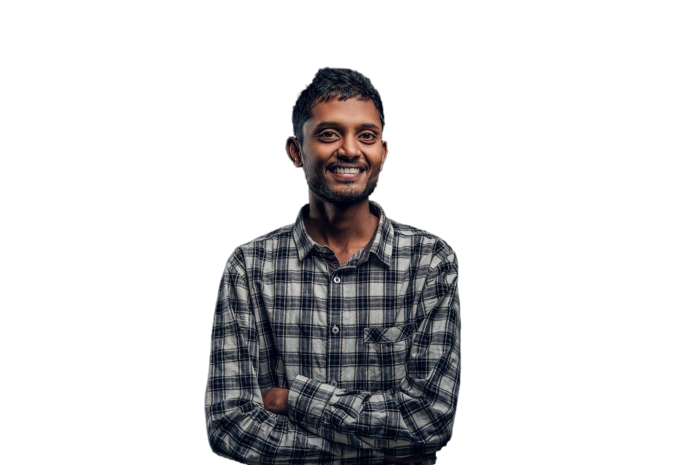

ABOUT

Emma Clark

Aerospace Engineer
Writing for the StarLog blog allows me to share the thrilling
advancements we're making in aerospace engineering. It's a fantastic
platform to bridge the gap between our technical work and space
enthusiasts. Every post I write is an opportunity to highlight the
cutting-edge technology and innovative designs that my team is
developing. This not only brings our work closer to the public but
also inspires the next generation of engineers. My articles aim to
illustrate the complex world of aerospace in a way that is
accessible and exciting, encouraging young minds to explore the
possibilities within this dynamic field.
Raj Patel

Planetary Scientist
At StarLog, I channel my research into articles that unravel the
complexities of our solar system. It's incredibly rewarding to
ignite curiosity about planetary science through our blog. Each
piece I contribute transforms dense scientific data and discoveries
into stories that captivate and educate our readers about the
wonders of the universe. By explaining how we gather and interpret
data from space missions, I hope to make the field of planetary
science more relatable to our audience. My goal is to foster a
deeper appreciation for the scientific processes that help us
understand planets and their interactions within our solar system.
Li Wei Zhang
Systems Analyst
Contributing to the StarLog blog, I demystify the systems that power
our missions. It’s a wonderful way to connect with our audience and
share insights into the tech behind space exploration.
Amina Diop
Mission Control Director
Through my posts on the StarLog blog, I get to recount the stories
behind our missions, offering readers a glimpse into the nerve
center of space operations. Each article is an opportunity to share
the tension and triumphs that come with each launch and satellite
deployment. I discuss the intricate dance of spacecraft maneuvering,
the critical decisions made behind the scenes, and the collaborative
spirit that drives our success. My writing brings to life the
challenges and achievements of mission control, highlighting how
every team member contributes to the monumental task of space
exploration. It's not just about the technology and spacecraft; it's
about the people, the decisions, and the incredible teamwork that
makes the impossible possible.
Miguel Sanchez
Spacecraft Pilot
Sharing my experiences as a pilot on the StarLog blog is as
thrilling as navigating through the cosmos. In each post, I detail
the exhilarating complexities of piloting cutting-edge spacecraft—
from the rigorous pre-flight checks to the serene moments above
Earth. My stories bring readers into the cockpit to experience the
blend of precision and challenges faced during each mission. Looking
back at our planet from space, the perspective is not just
awe-inspiring—it's transformative.
Elena Kuznetsova
Astrophysicist
Writing for the StarLog blog lets me simplify the complex phenomena
of the cosmos for enthusiasts and peers alike, spreading the wonder
of astrophysics far and wide. Each blog post is a journey through
the mysteries of the universe, from unraveling the secrets of black
holes to explaining the delicate nuances of cosmic radiation. By
sharing these insights, I aim to demystify the most abstract
concepts of astrophysics and show how they impact our understanding
of the universe's structure and history. My articles serve as a
bridge, connecting the theoretical underpinnings of astrophysics
with the observable aspects that intrigue and inspire all of us who
gaze at the night sky.
Tom Brooks
Communications Specialist
I harness the power of storytelling on the StarLog blog to make our
space exploration endeavors resonate with people around the globe.
It's about making science accessible and engaging.